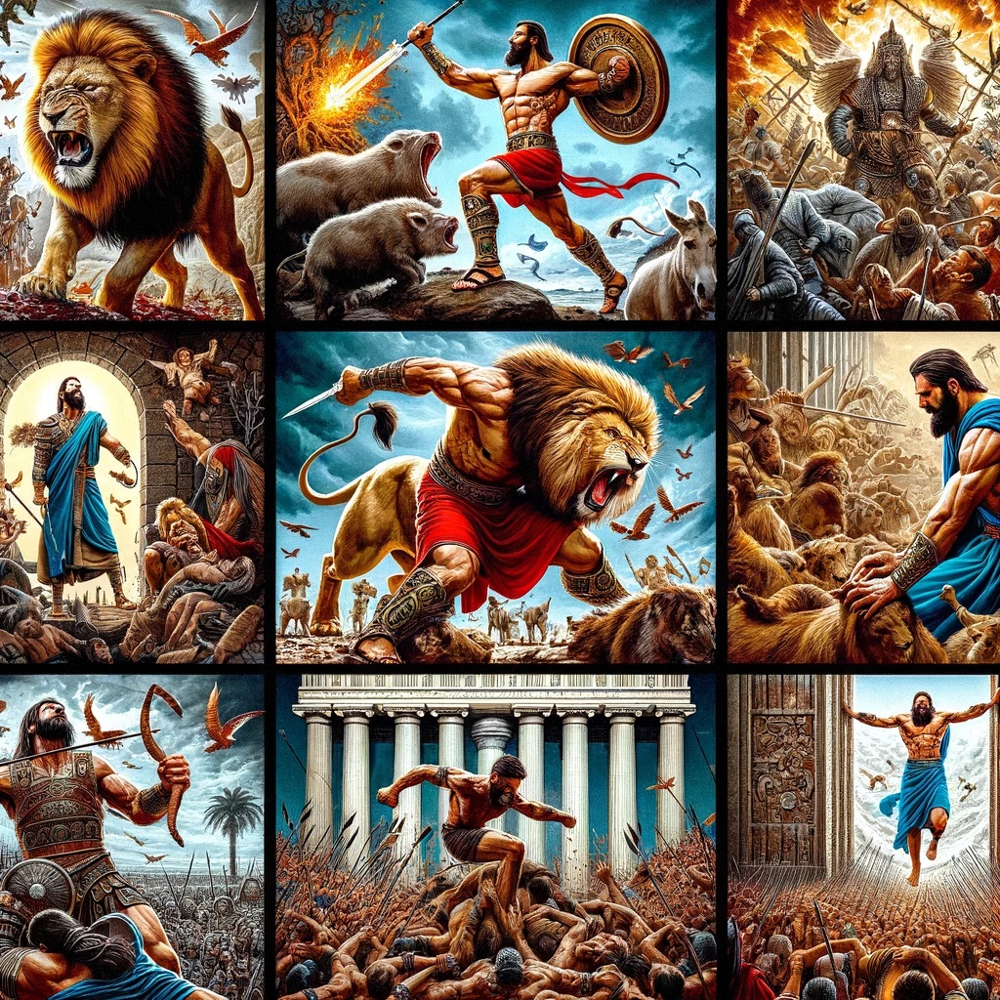

Discover the legendary tale of Sampson, the Nazirite with unparalleled strength, and his divine mission to liberate the Israelites from the Philistines.
| Event | Description |
|---|---|
| Birth | Foretold by an angel, Sampson was born to deliver Israel from the Philistines. |
| Feats of Strength | Sampson performed incredible feats, such as slaying a lion with his bare hands. |
| Downfall | Sampson's secret was revealed by Delilah, leading to his capture. |
| Redemption | In his final act, Sampson destroyed the Philistine temple, fulfilling his destiny. |